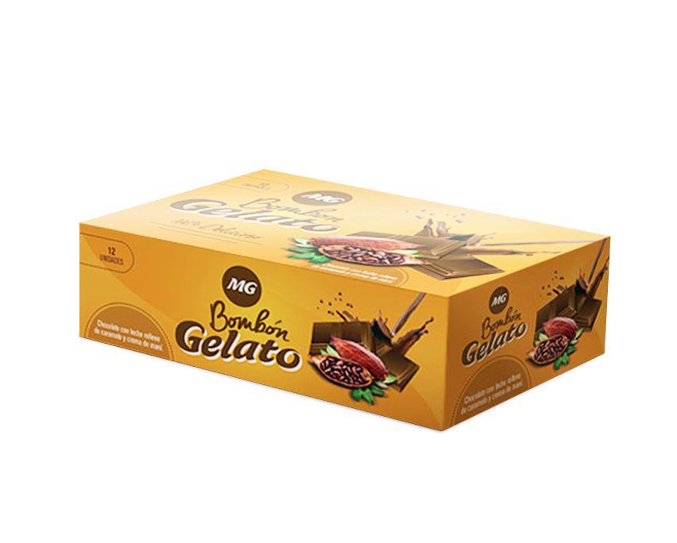
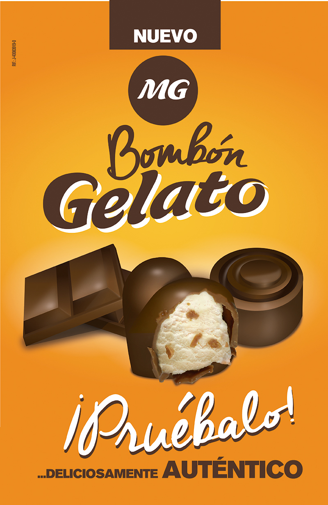
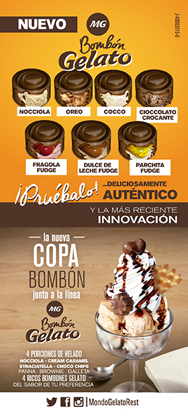
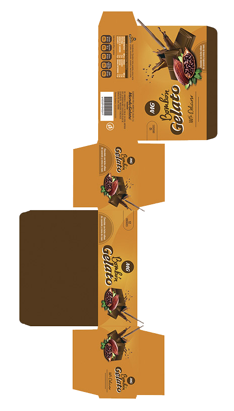
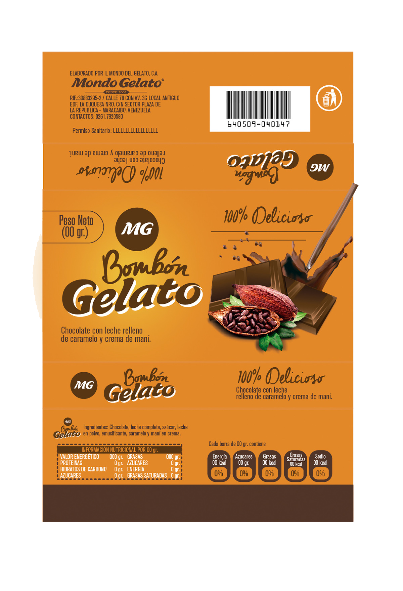
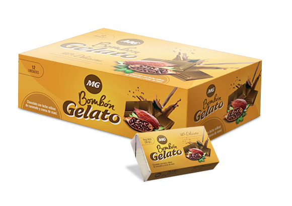

Packaging prototype · 2014
Bombón Gelato
This project was developed for Il Mondo del Gelato, a chain of ice cream shops founded in 2002 in Venezuela. The brand has undergone several changes in its image and corporate structure over time, aiming to expand its market both locally and internationally.
Problem definition
- Social media trends.
- Rising consumer expectations.
- Increased competition.
- Decline in quality.
- Price reductions.
- Decrease in factory staff.

What can be improved?
- A new production method.
- Evaluating the skills of current staff.
- Budget assessment.
- Partnering with a supplier.
- New equipment.
How can it be achieved?
- Explore ingredients that could be part of new products.
- Hiring a specialized teacher.
- Hire a specialized expert.
- Innovate by creating a new product.

A new product!
Archetypes
Janettsy
Fitness Coach
A Venezuelan public figure living in Miami, USA. Her work involves promoting motivation, healthy living, good nutrition, and fitness.
She expects a positive service experience when invited as part of a tourist route, and her recommendations can significantly influence other consumers.
Miguel
Social Communicator
Enjoys spending time with friends and family. Miguel is a young man who is always curious about new things. He often visits places to enjoy drinks, have lunch with colleagues or his partner, and try new desserts. He frequently visits the main store as it is close to his workplace, and he feels privileged for his perseverance and familiarity with the store staff.
However, he dislikes waiting due to large crowds and becomes frustrated when noticing mistakes or unusual situations. These experiences lead him to compare the service with better experiences elsewhere.
Florencia
Teacher
Florencia has had the opportunity to visit the ice cream factory through scheduled school tours and knows that the ice cream is quite popular.
She rarely visits the store but usually goes with her family to grab ice cream quickly. She prefers delivery services because she dislikes crowds. Occasionally, she feels the need to purchase something extra to take home or as a gift for a work gathering—something unique and different.
Strategies
Pieces of design


Why is it necessary?
MVP
- Small size.
- Easy to open.
- Follows Il Mondo del Gelato product style.
- Water-resistant material.
- Maintains product integrity at medium temperatures.
- High-resolution printing.
Sketching & Design


Prototype
